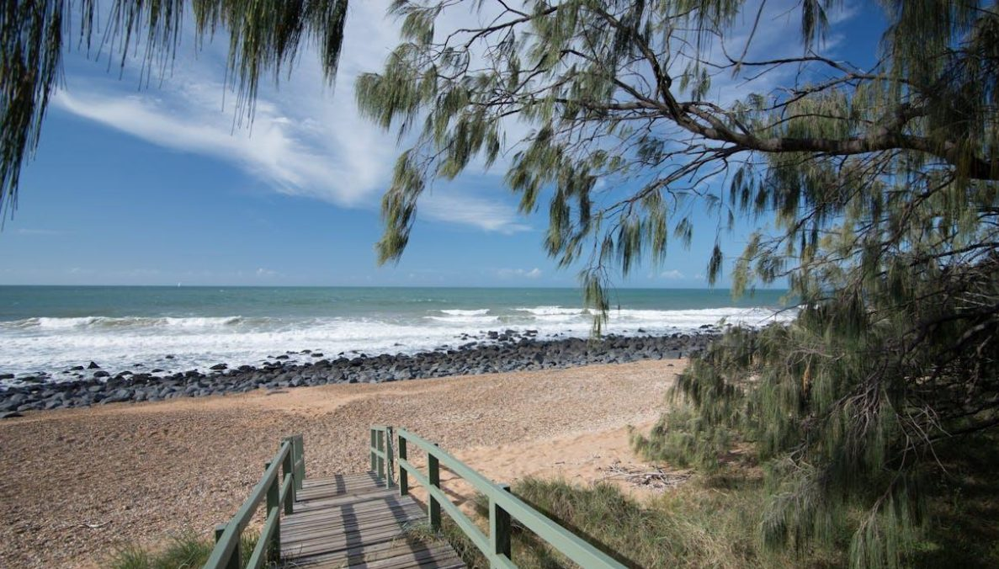

Most people who move here are trading a bigger city for warmer weather, a shorter commute and a beach that is never far away. That trade is real, and so is what you give up. Both sides, plainly.
What Bundaberg is actually good at
Real responsibility, quickly
A busy, growing regional health service means broader day-to-day scope and faster entry to complex work than a big-city rotation.
A commute measured in minutes
Most of the city sits ten to fifteen minutes from work, whichever suburb you choose.
Housing that leaves room
A fraction of Brisbane or the southern capitals’ prices, so a family home near the water is realistic on a single clinical income.
Regional migration incentives
Bundaberg’s classification opens skilled-migration pathways the capitals do not offer.
Warm, reliably
A subtropical climate most people would pay a premium for elsewhere in Australia.
The reef and the rookery, minutes away
Turtles at Mon Repos, reef islands offshore, without Cairns’ crowds or prices.

A quiet boardwalk to the beach along Bundaberg’s coast.
What to weigh up
None of the following should stop you. All of them are worth knowing before you sign, because they are what people tell us they wish they had asked about.
Clinical
The bench is real but finite
Fewer colleagues in your specialty than a metropolitan department. Ask how many people sit alongside you specifically, not how many work in the region.
Clinical
The most complex work is referred south
Brisbane and Sunshine Coast tertiary centres take the rarest cases, a normal part of how regional Queensland operates.
Practical
Brisbane is a real trip, not a hop
Four hours by road or around seventy minutes by air. Fine for an occasional weekend, a genuine commitment for a same-day trip.
Practical
The wet season is genuinely wet
November to March brings heat, humidity and heavier rain. If you are arriving from a temperate climate, budget for a real adjustment.
Personal
It is a regional city, not a big one
The amenities of a growing regional centre, not of Brisbane or the Gold Coast. Some people find that a relief; others miss the range.
When another city is the better answer
If you need a large subspecialty team around you, Brisbane — or for a bigger coastal city with more amenities, the Gold Coast — is the honest recommendation, and both are close enough that Bundaberg can be a later move rather than a rejected one. If the draw is the warm-climate, reef-adjacent lifestyle specifically, that is exactly what Bundaberg offers without the far-north crowds or prices.
“
Bundaberg trades a bigger city for a shorter drive to the reef and a longer afternoon at the beach.
What clinicians tell us, in one sentence
A typical week
A ten-minute drive to work. An evening at Bargara while there is still light left. Saturday morning at the markets. Turtle season a genuine family ritual from November to March. A reef-island day trip when the weather allows it. Brisbane when you want a proper trip away.
The short version
Bundaberg gives you real regional responsibility in a growing health service, a commute in minutes, and the reef and the coast on your doorstep, for a fraction of what housing costs in Brisbane. What it asks in return is a smaller specialist bench and a four-hour drive to the nearest big city. If warm weather and a shorter commute matter to you, few places in Australia offer them this affordably.